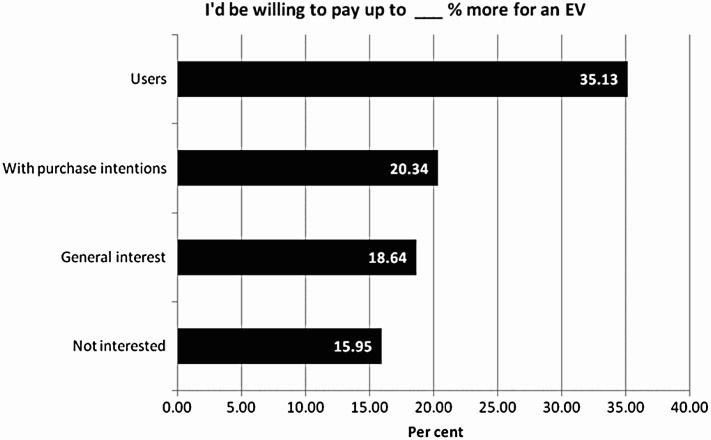

| Abstract |
| Introduction |
| Main Article |
| Conclusion |
| Analysis and discussion |
| References |
Active Learning (Angluin, 1988, Cohn et al., 1994) is a paradigm where a concept is learnt by an intelligent machine through the interaction of an oracle with the machine system, over a sequence of learning epochs. A distinctive component in an active system is the querying strategy, used to sample candidate training instances from a pool and evaluate them for informativeness, i.e., their potential to improve the classification model. Various strategies have been proposed including; Query by Committee (Seung et al., 1992), Monte Carlo estimation (Roy and McCallum, 2001), uncertainty sampling (Lewis and Gale, 1994) and version space reduction (margin sampling) (Tong and Koller, 2001). Irrespective of how the most informative pattern instances are chosen at each epoch they are presented for labeling, to a machine (database) or human oracle that has knowledge of the class labels. After adding the newly labeled instances to the current training set, a revised model is subsequently induced. A goal of this process is to achieve an efficient, incremental advancement of learning at each epoch. The process is continued until some stopping criterion has been met, such as reaching a stage where information from the selected instances is contrary to the model, causing the classifier confidence to drop, as in Vlachos (2008).
Electric vehicles (EV) have been around since the first half of the 19th century but have never really
been the preferred choice of power over combustion engines which have dominated the automotive market
for the majority of its existence. In recent years EVs have increased in popularity due to the rising
worries of climate change and the impact combustion engines are having on it. As a result of this, EV
stock and sales have been rapidly increasing since 2011 (fig 1)
Fig. 1. The global electric car sales and stock from 2005 to 2018. (Ding, S. and Li, R. 2021)
Governments all around the world are implementing brand new schemes in hopes to gradually shift the market
to be mainly electric. The UK have begun by setting minimum annual targets for EV sales starting from 22%
of total cars sold in 2024 to 100% in 2035. This change was initially meant to happen by 2030 but due to
the current cost of living crisis the UKs Prime Minister, Rishi Sunak, has pushed our target back a further
5 years stating that, “The upfront cost is still high – especially for families struggling with the cost of
living. Small businesses are worried about the practicalities. And we’ve got further to go to get that
charging infrastructure truly nationwide.” (Prime Minister’s Office. 2023) This is a clear sign that the
infrastructure that is needed to support electric cars is nowhere near ready as manufacturers were not
prepared for this sudden rise in EVs, and clearly shows that the technology we currently have isn’t developed
enough to be affordable for the public.
In 2010 an online survey in Germany asked a range of different people ranging from EV users all the way down
to people who weren’t interested in EVs at all. The survey was quite profound but there were a few key aspects
which stood out. They were asked to rate from 1-10 the likelihood each development or measure would have on
their purchase decisions of EVs (Fig 2). The two highest reasons for purchase were the ‘Improvement of
environmental aspects’ and ‘Financial incentive’ with the other two having neutral ratings. These factors
are the main persuaders in purchasing an EV in todays market and developments are constantly being made in
order to improve these to hopefully go completely EV in the near future. Another part of the survey asked
people how much more they’d be willing to spend on an EV as supposed to a combustion vehicle (Fig 3). Current
EV users at the time of the survey, who may know more on how promising the EV industry would turn out to be,
were found to be willing to pay a significant amount more than the rest. This may be due to their understanding
on the environmental aspects and financial benefits as reported on in the previous figure. This survey was
conducted in 2010, at the same time as the rise in EV sales was taking place, which meant the whole EV market
was still in its very early stages. Since this the technology in EVs and availability of them has skyrocketed
due to the newfound interest in reversing climate change as well as being a more sustainable society.

Vehicular transport is one of the leading contributions to greenhouse gases and climate change. This is the main
reason pushing manufacturers and governments to look for more sustainable transport solutions in hopes to reduce
their contribution. Unlike combustion vehicles, EVs produce zero carbon emissions whilst operating making them the
leading solution to contribute to a cleaner planet. Manufacturers have begun developing new technologies to make
EVs more affordable to make the shift less costly on families who may not be able to currently afford EVs. Most
advancements made in recent years are aimed at making the vehicles more efficient in terms of battery range, battery
capacity and other systems such as regenerative braking which aims to convert the wasted energy caused during breaking
back into useful energy to recharge the battery. Due to all these systems being developed by different companies there
is a lot of competition within each sector, and with each new advancement the buying price of these cars is a lot
higher than that of your usual combustion engine vehicle.
Despite this higher purchase price, the long-term operating costs and reduced fuelling costs are significantly less
than combustion engines making certain EVs far more affordable in the long run as they don’t require as much
maintenance to keep them running. If this wasn’t enough to make consumers purchase an EV, the UK government ran a
“plug-in car grant” from 2011 up until 2022 which gave a discount on vehicles with zero emissions. Since then, the
“EV ChargePoint Grant” was put in place to replace this which “offers financial help for electric smart chargepoint
installations at domestic/residential properties.” (Lewis, H. 2023) With this grant people can expect up to 75 percent
of the cost of their charpoint to be funded to help more people start driving EVs.
Hopefully in the coming years the infrastructure to support an almost fully EV society will come into place, as well as giving more people the opportunity to purchase more affordable EVs. This will be a huge change that needs everyone working together for it to happen on a worldwide scale to achieve the targets that have been set. Overall, this will have a very positive impact on our society as it will reduce the general running costs for owning a vehicle, as well as reducing the impact that day to day commuting has on climate change without making it too hard for our society to adjust to the changes being implemented.
| £ Cost of repairs | Lifespan of repairs (years) |
|---|---|
| 0.7 m | 2 |
| 3.3 m | 4 |
| 2.6 m | 5 |
| 17.4 m | 7 |
| 8.8 m | 9 |
Ding, S. and Li, R. (2021) ‘Forecasting the sales and stock of electric vehicles using a novelself-adaptive optimized grey model’, Engineering Applications of Artificial Intelligence, 100, pp. 104148, Available at: https://doi.org/10.1016/j.engappai.2020.104148.
Prime Minister’s Office. (2023) ‘PM speech on Net Zero’. Available at: https://www.gov.uk/government/speeches/pm-speech-on-net-zero-20-september-2023 (Accessed: 26 October 2023)
Lewis, H. (2023) ‘Government Grants for Electric Cars in the UK in 2023’. Available at: https://www.evanshalshaw.com/blog/government-grants-for-electric-cars-uk/#:~:text=EV%20Chargepoint%20Grant,-The%20EV%20Chargepoint&text=You%20can%20get%20up%20to,a%20chargepoint%20in%20their%20home. (Accessed: 25 October 2023)
Peters, A. and Dütschke, E. (2014) ‘How do Consumers Perceive Electric Vehicles? A Comparison of German Consumer Groups’, Journal of Environmental Policy & Planning, 3 July, pp. 359-377, Available at: https://www.tandfonline.com/doi/full/10.1080/1523908X.2013.879037
Schipper, L, Saenger, C and Sudarshan, A (2011) ‘Transport and Carbon Emissions in the United States: The Long View’, Energies, 4, pp. 563-581, Available at: https://doi.org/10.3390/en4040563